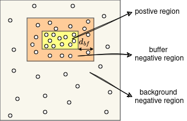

cosense3d.modules.plugin package
Submodules
cosense3d.modules.plugin.attn module
- class cosense3d.modules.plugin.attn.NeighborhoodAttention(data_info, stride, emb_dim=128)[source]
Bases:
Module- forward(ref_pts, ctr_coor, ctr_feat)[source]
Parameters
ref_pts LongTensor(Q, 3): 2d coordinates in metrics(batch_idx, x, y) ctr_coor LongTensor(V, 3): 2d coordinates in indices (batch_idx, x, y) ctr_feat FloatTensor(V, d): bev grid center point features
Returns
out_features FloatTensor(Q, d): attended features
- training: bool
- class cosense3d.modules.plugin.attn.ScaledDotProductAttention(dim: int)[source]
Bases:
ModuleScaled Dot-Product Attention proposed in “Attention Is All You Need” Compute the dot products of the query with all keys, divide each by sqrt(dim), and apply a softmax function to obtain the weights on the values
- forward(query, key, value)[source]
- Parameters:
query – (batch, q_len, d_model) tensor containing projection vector for decoder.
key – (batch, k_len, d_model) tensor containing projection vector for encoder.
value – (batch, v_len, d_model) tensor containing features of the encoded input sequence.
- Returns:
context, attn - context: tensor containing the context vector from attention mechanism. - attn: tensor containing the attention (alignment) from the encoder outputs.
- training: bool
cosense3d.modules.plugin.bev_rpn module
- class cosense3d.modules.plugin.bev_rpn.Conv2d(in_channels, out_channels, k, s, p, activation=True, batch_norm=True)[source]
Bases:
Module- forward(x)[source]
Defines the computation performed at every call.
Should be overridden by all subclasses.
Note
Although the recipe for forward pass needs to be defined within this function, one should call the
Moduleinstance afterwards instead of this since the former takes care of running the registered hooks while the latter silently ignores them.
- training: bool
- class cosense3d.modules.plugin.bev_rpn.CustomRPN(strides=[2, 2, 2], down_sample=2, num_layers=3, in_channels=128, out_channels=256)[source]
Bases:
Module- forward(x)[source]
Defines the computation performed at every call.
Should be overridden by all subclasses.
Note
Although the recipe for forward pass needs to be defined within this function, one should call the
Moduleinstance afterwards instead of this since the former takes care of running the registered hooks while the latter silently ignores them.
- training: bool
- class cosense3d.modules.plugin.bev_rpn.RPN(anchor_num=2)[source]
Bases:
Module- forward(x)[source]
Defines the computation performed at every call.
Should be overridden by all subclasses.
Note
Although the recipe for forward pass needs to be defined within this function, one should call the
Moduleinstance afterwards instead of this since the former takes care of running the registered hooks while the latter silently ignores them.
- training: bool
cosense3d.modules.plugin.downsample_conv module
Class used to downsample features by 3*3 conv
- class cosense3d.modules.plugin.downsample_conv.DoubleConv(in_channels: int, out_channels: int, kernel_size: int, stride: int, padding: bool)[source]
Bases:
ModuleDouble convoltuion
- forward(x)[source]
Defines the computation performed at every call.
Should be overridden by all subclasses.
Note
Although the recipe for forward pass needs to be defined within this function, one should call the
Moduleinstance afterwards instead of this since the former takes care of running the registered hooks while the latter silently ignores them.
- training: bool
- class cosense3d.modules.plugin.downsample_conv.DownsampleConv(in_channels, kernel_sizes=[1], dims=[256], strides=[1], paddings=[0])[source]
Bases:
Module- forward(x)[source]
Defines the computation performed at every call.
Should be overridden by all subclasses.
Note
Although the recipe for forward pass needs to be defined within this function, one should call the
Moduleinstance afterwards instead of this since the former takes care of running the registered hooks while the latter silently ignores them.
- training: bool
cosense3d.modules.plugin.flash_attn module
- class cosense3d.modules.plugin.flash_attn.FlashAttention(softmax_scale: float | None = None, attention_dropout: float = 0.0, return_attn_weights: float = False, device: str | None = None, dtype: type | None = None)[source]
Bases:
ModuleImplement the scaled dot product attention with softmax.
- forward(q: Tensor, kv: Tensor, causal: bool = False, key_padding_mask: Tensor | None = None)[source]
Implements the multihead softmax attention.
- Parameters:
q – The tensor containing the query. (B, T, H, D)
kv – The tensor containing the key, and value. (B, S, 2, H, D)
causal –
key_padding_mask – a bool tensor of shape (B, S)
- Returns:
- training: bool
- class cosense3d.modules.plugin.flash_attn.FlashMHA(embed_dim, num_heads, bias=True, batch_first=True, attention_dropout=0.0, causal=False, device=None, dtype=None, **kwargs)[source]
Bases:
Module- forward(q, k, v, key_padding_mask=None)[source]
x: (batch, seqlen, hidden_dim) (where hidden_dim = num heads * head dim) key_padding_mask: bool tensor of shape (batch, seqlen)
- training: bool
- cosense3d.modules.plugin.flash_attn.flash_attn_unpadded_kvpacked_test(q, kv, cu_seqlens_q, cu_seqlens_k, max_sq, max_sk, dropout_p, softmax_scale, causal, batch_size)[source]
- cosense3d.modules.plugin.flash_attn.index_first_axis()
cosense3d.modules.plugin.fpn module
- class cosense3d.modules.plugin.fpn.FPN(in_channels, out_channels, num_outs, start_level=0, end_level=-1, add_extra_convs=False, relu_before_extra_convs=False, no_norm_on_lateral=False, conv_cfg=None, norm_cfg=None, act_cfg=None, upsample_cfg={'mode': 'nearest'}, init_cfg={'distribution': 'uniform', 'layer': 'Conv2d', 'type': 'Xavier'})[source]
Bases:
Module- training: bool
cosense3d.modules.plugin.gevbev_decoder module
- class cosense3d.modules.plugin.gevbev_decoder.GevBEVDecoder(data_info, stride, kernel=3, var0=0.1)[source]
Bases:
Module- forward(ref_pts, ctr_coor, ctr_reg)[source]
- Parameters:
ref_pts – LongTensor(Q, 3) 2d coordinates in metrics(batch_idx, x, y)
ctr_coor – LongTensor(V, 3) 2d coordinates in indices (batch_idx, x, y)
ctr_reg – FloatTensor(V, d) bev grid center point regression result
- Returns:
out_evidence FloatTensor(Q, d): attended features
- training: bool
cosense3d.modules.plugin.mink_spconv module
- class cosense3d.modules.plugin.mink_spconv.Spconv(data_info, convs, d=2, dilation=False, **kwargs)[source]
Bases:
Module- forward(stensor_dict, **kwargs)[source]
Defines the computation performed at every call.
Should be overridden by all subclasses.
Note
Although the recipe for forward pass needs to be defined within this function, one should call the
Moduleinstance afterwards instead of this since the former takes care of running the registered hooks while the latter silently ignores them.
- training: bool
cosense3d.modules.plugin.naive_compressor module
- class cosense3d.modules.plugin.naive_compressor.NaiveCompressor(input_dim, compress_ratio)[source]
Bases:
ModuleA very naive compression that only compress on the channel.
- forward(x)[source]
Defines the computation performed at every call.
Should be overridden by all subclasses.
Note
Although the recipe for forward pass needs to be defined within this function, one should call the
Moduleinstance afterwards instead of this since the former takes care of running the registered hooks while the latter silently ignores them.
- training: bool
cosense3d.modules.plugin.pillar_encoder module
- class cosense3d.modules.plugin.pillar_encoder.PFNLayer(in_channels, out_channels, use_norm=True, last_layer=False)[source]
Bases:
Module- forward(inputs)[source]
Defines the computation performed at every call.
Should be overridden by all subclasses.
Note
Although the recipe for forward pass needs to be defined within this function, one should call the
Moduleinstance afterwards instead of this since the former takes care of running the registered hooks while the latter silently ignores them.
- training: bool
- class cosense3d.modules.plugin.pillar_encoder.PillarEncoder(features, voxel_size, lidar_range, channels, use_norm=True)[source]
Bases:
Module- property absolute_xyz_dim
- property distance_dim
- forward(voxel_features, coords, voxel_num_points)[source]
Defines the computation performed at every call.
Should be overridden by all subclasses.
Note
Although the recipe for forward pass needs to be defined within this function, one should call the
Moduleinstance afterwards instead of this since the former takes care of running the registered hooks while the latter silently ignores them.
- property intensity_dim
- training: bool
- property xyz_dim
cosense3d.modules.plugin.ssfa module
- class cosense3d.modules.plugin.ssfa.SSFA(in_channels, out_channels=128, shrink_strides=None, shrink_channels=None)[source]
Bases:
Module- forward(x)[source]
Defines the computation performed at every call.
Should be overridden by all subclasses.
Note
Although the recipe for forward pass needs to be defined within this function, one should call the
Moduleinstance afterwards instead of this since the former takes care of running the registered hooks while the latter silently ignores them.
- training: bool
cosense3d.modules.plugin.target_assigners module
- class cosense3d.modules.plugin.target_assigners.BEVBoxAssigner(n_cls, pos_neg_ratio=5, mining_thr=0, max_mining_ratio=3, mining_start_epoch=5, merge_all_classes=False)[source]
Bases:
BaseAssignerAssign center points in the BEV maps to positve if the point is in the range ‘min_radius’ of any gt box center.
- class cosense3d.modules.plugin.target_assigners.BEVCenternessAssigner(n_cls, min_radius=1.0, pos_neg_ratio=5, mining_thr=0, max_mining_ratio=3, mining_start_epoch=5, merge_all_classes=False, use_gaussian=False, sigma=1.0)[source]
Bases:
BaseAssignerAssign center points in the BEV maps to positve if the point is in the range ‘min_radius’ of any gt box center.
- class cosense3d.modules.plugin.target_assigners.BEVPointAssigner(down_sample=True, sample_mining_thr=0.0, max_mining_ratio=3, annealing_step=None, topk_sampling=False, annealing_sampling=False)[source]
Bases:
BaseAssignerAssign target points to BEV boxes and down-sample the target points with buffered-based method.
- class cosense3d.modules.plugin.target_assigners.BEVSemsegAssigner(data_info, stride, tgt_range=None, down_sample=False, annealing_step=None)[source]
Bases:
BaseAssigner
- class cosense3d.modules.plugin.target_assigners.BoxAnchorAssigner(box_size, dirs, voxel_size, lidar_range, stride, box_coder, pos_threshold=0.6, neg_threshold=0.45, score_thrshold=0.25)[source]
Bases:
BaseAssigner,Module- assign(gt_boxes)[source]
Parameters
gt_boxes Tensor(N, 7): [x, y, z, l, w, h, r, …]
Returns
reg Tensor(H, W, num_anchors, code_size): box regression targets
- training: bool
- class cosense3d.modules.plugin.target_assigners.BoxCenterAssigner(voxel_size, lidar_range, stride, detection_benchmark, class_names_each_head, center_threshold, box_coder, activation='relu', edl=True)[source]
Bases:
BaseAssigner,Module- get_predictions(preds)[source]
Decode the center and regression maps into BBoxes.
- Parameters:
preds –
cls: list[Tensor], each tensor is the result from a cls head with shape (B or N, Ncls, …).
- reg:
box: list[Tensor], one tensor per reg head with shape (B or N, 6, …).
dir: list[Tensor], one tensor per reg head with shape (B or N, 8, …).
scr: list[Tensor], one tensor per reg head with shape (B or N, 4, …).
- Returns:
roi: * box: list[Tensor], one tensor per head with shape (N, 8). * scr: list[Tensor], one tensor per head with shape (N,). * lbl: list[Tensor], one tensor per head with shape (N,). * idx: list[Tensor], one tensor per head with shape (3, N), center map indices of the boxes.
- pts_to_indices(bev_pts: Tensor)[source]
- Parameters:
bev_pts – (N, 3+), BEV points, 1st column should be batch index.
- Returns:
- training: bool
- class cosense3d.modules.plugin.target_assigners.BoxSparseAnchorAssigner(box_size, dirs, voxel_size, lidar_range, stride, box_coder, me_coor=True, pos_threshold=0.6, neg_threshold=0.45, score_thrshold=0.25)[source]
Bases:
BaseAssigner,Module- assign(coors: Tensor, gt_boxes: Tensor)[source]
- Parameters:
coors – (N, 2) 2D mink coor [x, y]
gt_boxes – (M, 7) [x, y, z, l, w, h, r]
- Returns:
labels Tensor(N, num_anchors): box regression targets
reg_tgt Tensor(N, num_anchors, code_size): box regression targets
ir_score Tensor(N, num_anchors, 4) or None: direction score target
- get_predictions(coors, preds)[source]
- Parameters:
coors – Tensor(N, 3) mink coor [batch_idx, x, y]
preds –
- Returns:
- training: bool
- class cosense3d.modules.plugin.target_assigners.ContiBEVAssigner(distr_r=2.0, var0=0.1, **kwargs)[source]
Bases:
BEVSemsegAssigner- assign(ctr_pts, samples, B, gt_boxes=None, **kwargs) dict[source]
Assign target.
- Parameters:
ctr_pts – center points of bev maps, including indices, metric centers and regression results.
samples – BEV target point samples.
B – batch size.
gt_boxes – ground truth BBoxes.
kwargs – keyword arguments.
- Returns:
target_dict that contains the static or/and dynamic target points and their corresponding labels.
- get_predictions(ctr_pts, B, tag, **kwargs)[source]
Given center points and its corresponding regressions, generate the dense bev semseg maps and its uncertainty and observation mask.
- Parameters:
ctr_pts – center points of bev maps, including indices, metric centers and regression results.
B – batch size.
tag – tag for regression key “static | dynamic”.
kwargs – keyword arguments
- Returns:
conf: confidence bev map.
unc: uncertainty bev map.
obs_mask: observation mask of the bev map.
- sample_dynamic_tgt_pts(ctr_pts: dict, gt_boxes: Tensor, B: int) Tuple[Tensor, Tensor, Tensor][source]
Given the input coordinates of the center points and the ground truth BBoxes, sample the BEV target points for BEV semantic segmentation following the buffer-based sampling as illustrated in the following image:
- Parameters:
ctr_pts – center points of bev maps, including indices, metric centers and regression results.
gt_boxes – ground truth BBoxes.
B – batch size.
- Returns:
tgt_pts: sampled target points.
tgt_lbl: labels of the sampled target points.
inds: map indices of the sampled target points.
{kind=link}
- class cosense3d.modules.plugin.target_assigners.DiscreteBEVAssigner(data_info, stride, down_sample=False, annealing_step=None)[source]
Bases:
BaseAssigner
- class cosense3d.modules.plugin.target_assigners.HeatmapAssigner[source]
Bases:
BaseAssigner- static draw_heatmap_gaussian(heatmap, center, radius, k=1)[source]
Get gaussian masked heatmap.
- Args:
heatmap (torch.Tensor): Heatmap to be masked. center (torch.Tensor): Center coord of the heatmap. radius (int): Radius of gaussian. k (int, optional): Multiple of masked_gaussian. Defaults to 1.
- Returns:
torch.Tensor: Masked heatmap.
- class cosense3d.modules.plugin.target_assigners.HungarianAssigner2D(cls_cost={'type': 'classification', 'weight': 1.0}, reg_cost={'type': 'bboxl1', 'weight': 1.0}, iou_cost={'type': 'giou', 'weight': 1.0}, centers2d_cost={'type': 'l1', 'weight': 1.0})[source]
Bases:
BaseAssignerComputes one-to-one matching between predictions and ground truth.
This class computes an assignment between the targets and the predictions based on the costs. The costs are weighted sum of three components: classification cost, regression L1 cost, regression iou cost and center2d l1 cost. The assignment is done in the following steps, the order matters.
assign every prediction to -1
compute the weighted costs
do Hungarian matching on CPU based on the costs
assign all to 0 (background) first, then for each matched pair between predictions and gts, treat this prediction as foreground and assign the corresponding gt index (plus 1) to it.
- assign(bbox_pred, cls_pred, pred_centers2d, gt_bboxes, gt_labels, centers2d, img_size, eps: float = 1e-07)[source]
Computes one-to-one matching based on the weighted costs.
This method assign each query prediction to a ground truth or background. The assigned_gt_inds with -1 means don’t care, 0 means negative sample, and positive number is the index (1-based) of assigned gt. The assignment is done in the following steps, the order matters.
assign every prediction to -1
compute the weighted costs
do Hungarian matching on CPU based on the costs
assign all to 0 (background) first, then for each matched pair between predictions and gts, treat this prediction as foreground and assign the corresponding gt index (plus 1) to it.
- Parameters:
bbox_pred – Predicted boxes with normalized coordinates (cx, cy, w, h), which are all in range [0, 1]. Shape [num_query, 4].
cls_pred – Predicted classification logits, shape [num_query, num_class].
pred_centers2d – prediction 2d center points.
gt_bboxes – ground truth bboxes.
gt_labels – Label of gt_bboxes, shape (num_gt,). img_size: input image size.
centers2d – 2d center points.
img_size – input image size.
eps – A value added to the denominator for numerical stability. Default 1e-7.
- Returns:
- class cosense3d.modules.plugin.target_assigners.HungarianAssigner3D(cls_cost={'type': 'focal_loss', 'weight': 1.0}, reg_cost={'type': 'l1', 'weight': 1.0}, iou_cost={'type': 'iou', 'weight': 1.0})[source]
Bases:
BaseAssigner
- class cosense3d.modules.plugin.target_assigners.MatchCost[source]
Bases:
objectThis class is modified from mmdet.
- static bboxl1(bbox_pred: Tensor, gt_bboxes: Tensor, weight: float = 1.0, box_format: str = 'xyxy') Tensor[source]
- Parameters:
bbox_pred – Predicted boxes with normalized coordinates (cx, cy, w, h), which are all in range [0, 1]. Shape (num_query, 4).
gt_bboxes – Ground truth boxes with normalized coordinates (x1, y1, x2, y2). Shape (num_gt, 4).
weight – loss_weight.
box_format – ‘xyxy’ for DETR, ‘xywh’ for Sparse_RCNN.
- Returns:
bbox_cost value with weight
- static classification(cls_pred: Tensor, gt_labels: Tensor, weight: float = 1.0) Tensor[source]
- Parameters:
cls_pred – Predicted classification logits, shape (num_query, num_class).
gt_labels – Label of gt_bboxes, shape (num_gt,).
weight – loss_weight.
- Returns:
cls_cost value with weight
- static giou(bboxes: Tensor, gt_bboxes: Tensor, weight: float = 1.0)[source]
- Parameters:
bboxes – Predicted boxes with unnormalized coordinates (x1, y1, x2, y2). Shape (num_query, 4).
gt_bboxes – Ground truth boxes with unnormalized coordinates (x1, y1, x2, y2). Shape (num_gt, 4).
weight – loss weight.
- Returns:
giou_cost value with weight
- class cosense3d.modules.plugin.target_assigners.RoIBox3DAssigner(box_coder)[source]
Bases:
BaseAssigner
- class cosense3d.modules.plugin.target_assigners.RoadLineAssigner(res, range, pos_neg_ratio=2)[source]
Bases:
BaseAssigner
- cosense3d.modules.plugin.target_assigners.pos_neg_sampling(labels: Tensor, pos_neg_ratio: float) Tensor[source]
Downsample negative targets.
- Parameters:
labels – class labels.
pos_neg_ratio – ratio = num_neg_samples / num_pos_samples.
- Returns:
class labels with -1 labels to be ignored during training.
- cosense3d.modules.plugin.target_assigners.sample_mining(scores: Tensor, labels: Tensor, dists=None, sample_mining_thr=0.5, max_sample_ratio=5, max_num_sample=None)[source]
When only limited numbers of negative targets are sampled for training, and the majority of the negative samples are ignored, then there is a high probability that hard negative targets are also ignored. This will weaken the model to learn from these hard negative targets and generate a lot of false positives. Therefore, this function mines the samples that have high predictive scores as training targets. This function should be used after ‘pos_neg_sampling’.
- Parameters:
scores – (N1, …Nk) classification scores/confidences that the sample belong to foreground.
labels – (N1…, Nk) class labels, -1 indicates ignore, 0 indicates negative, positive numbers indicates classes.
dists – distances.
sample_mining_thr – score threshold for sampling
max_sample_ratio – n_sample / n_pos_sample
max_num_sample – maximum number of samples.
- Returns:
cosense3d.modules.plugin.transformer module
- class cosense3d.modules.plugin.transformer.FFN(embed_dims: int, feedforward_channels: int, num_fcs: int = 2, act_cfg: dict = {'inplace': True, 'type': 'ReLU'}, dropout: float = 0.0, add_residual: bool = True)[source]
Bases:
ModuleImplements feed-forward networks (FFNs) with residual connection.
- training: bool
- class cosense3d.modules.plugin.transformer.MultiHeadAttentionWrapper(*args, **kwargs)[source]
Bases:
MultiheadAttention- bias_k: Tensor | None
- bias_v: Tensor | None
- forward(*args, **kwargs)[source]
- Args:
- query: Query embeddings of shape \((L, E_q)\) for unbatched input, \((L, N, E_q)\) when
batch_first=False or \((N, L, E_q)\) when
batch_first=True, where \(L\) is the target sequence length, \(N\) is the batch size, and \(E_q\) is the query embedding dimensionembed_dim. Queries are compared against key-value pairs to produce the output. See “Attention Is All You Need” for more details.- key: Key embeddings of shape \((S, E_k)\) for unbatched input, \((S, N, E_k)\) when
batch_first=False or \((N, S, E_k)\) when
batch_first=True, where \(S\) is the source sequence length, \(N\) is the batch size, and \(E_k\) is the key embedding dimensionkdim. See “Attention Is All You Need” for more details.- value: Value embeddings of shape \((S, E_v)\) for unbatched input, \((S, N, E_v)\) when
batch_first=Falseor \((N, S, E_v)\) whenbatch_first=True, where \(S\) is the source sequence length, \(N\) is the batch size, and \(E_v\) is the value embedding dimensionvdim. See “Attention Is All You Need” for more details.- key_padding_mask: If specified, a mask of shape \((N, S)\) indicating which elements within
key to ignore for the purpose of attention (i.e. treat as “padding”). For unbatched query, shape should be \((S)\). Binary and byte masks are supported. For a binary mask, a
Truevalue indicates that the correspondingkeyvalue will be ignored for the purpose of attention. For a byte mask, a non-zero value indicates that the correspondingkeyvalue will be ignored.- need_weights: If specified, returns
attn_output_weightsin addition toattn_outputs. Default:
True.- attn_mask: If specified, a 2D or 3D mask preventing attention to certain positions. Must be of shape
\((L, S)\) or \((N\cdot\text{num\_heads}, L, S)\), where \(N\) is the batch size, \(L\) is the target sequence length, and \(S\) is the source sequence length. A 2D mask will be broadcasted across the batch while a 3D mask allows for a different mask for each entry in the batch. Binary, byte, and float masks are supported. For a binary mask, a
Truevalue indicates that the corresponding position is not allowed to attend. For a byte mask, a non-zero value indicates that the corresponding position is not allowed to attend. For a float mask, the mask values will be added to the attention weight.- average_attn_weights: If true, indicates that the returned
attn_weightsshould be averaged across heads. Otherwise,
attn_weightsare provided separately per head. Note that this flag only has an effect whenneed_weights=True. Default:True(i.e. average weights across heads)
- query: Query embeddings of shape \((L, E_q)\) for unbatched input, \((L, N, E_q)\) when
- Outputs:
attn_output - Attention outputs of shape \((L, E)\) when input is unbatched, \((L, N, E)\) when
batch_first=Falseor \((N, L, E)\) whenbatch_first=True, where \(L\) is the target sequence length, \(N\) is the batch size, and \(E\) is the embedding dimensionembed_dim.attn_output_weights - Only returned when
need_weights=True. Ifaverage_attn_weights=True, returns attention weights averaged across heads of shape \((L, S)\) when input is unbatched or \((N, L, S)\), where \(N\) is the batch size, \(L\) is the target sequence length, and \(S\) is the source sequence length. Ifaverage_weights=False, returns attention weights per head of shape \((\text{num\_heads}, L, S)\) when input is unbatched or \((N, \text{num\_heads}, L, S)\).
Note
batch_first argument is ignored for unbatched inputs.
- class cosense3d.modules.plugin.transformer.MultiheadAttention(embed_dims: int, num_heads: int, dropout: float = 0.1, batch_first: bool = False, cache_attn_weights: bool = False, fp16: bool = False, **kwargs)[source]
Bases:
ModuleA wrapper for
torch.nn.MultiheadAttention. This module implements MultiheadAttention with identity connection, and positional encoding is also passed as input.- forward(query, key=None, value=None, identity=None, query_pos=None, key_pos=None, attn_mask=None, key_padding_mask=None, **kwargs)[source]
Forward function for MultiheadAttention.
- Parameters:
query – The input query with shape [num_queries, bs, embed_dims] if self.batch_first is False, else [bs, num_queries embed_dims].
key – The key tensor with shape [num_keys, bs, embed_dims] if self.batch_first is False, else [bs, num_keys, embed_dims]. If None, the
querywill be used. Defaults to None.value – The value tensor with same shape as key. Same in nn.MultiheadAttention.forward. Defaults to None. If None, the key will be used.
identity – This tensor, with the same shape as x, will be used for the identity link. If None, x will be used. Defaults to None.
query_pos – The positional encoding for query, with the same shape as x. If not None, it will be added to x before forward function. Defaults to None.
key_pos – The positional encoding for key, with the same shape as key. Defaults to None. If not None, it will be added to key before query_pos has the same shape as key, then query_pos will be used for key_pos. Defaults to None.
attn_mask – ByteTensor mask with shape [num_queries, num_keys]. Same in nn.MultiheadAttention.forward. Defaults to None.
key_padding_mask – ByteTensor with shape [bs, num_keys]. Defaults to None.
kwargs – allow passing a more general data flow when combining with other operations in transformerlayer.
- Returns:
forwarded results with shape [num_queries, bs, embed_dims] if self.batch_first is False, else[bs, num_queries embed_dims].
- training: bool
- class cosense3d.modules.plugin.transformer.MultiheadFlashAttention(embed_dims: int, num_heads: int, attn_drop: float = 0.0, proj_drop: float = 0.0, dropout: float | None = None, batch_first: bool = True, cache_attn_weights: bool = False, **kwargs)[source]
Bases:
ModuleA wrapper for
torch.nn.MultiheadAttention. This module implements MultiheadAttention with identity connection, and positional encoding is also passed as input.- forward(query, key=None, value=None, identity=None, query_pos=None, key_pos=None, attn_mask=None, key_padding_mask=None, **kwargs)[source]
Forward function for MultiheadAttention.
- Parameters:
query – The input query with shape [num_queries, bs, embed_dims] if self.batch_first is False, else [bs, num_queries embed_dims].
key – The key tensor with shape [num_keys, bs, embed_dims] if self.batch_first is False, else [bs, num_keys, embed_dims]. If None, the
querywill be used. Defaults to None.value – The value tensor with same shape as key. Same in nn.MultiheadAttention.forward. Defaults to None. If None, the key will be used.
identity – This tensor, with the same shape as x, will be used for the identity link. If None, x will be used. Defaults to None.
query_pos – The positional encoding for query, with the same shape as x. If not None, it will be added to x before forward function. Defaults to None.
key_pos – The positional encoding for key, with the same shape as key. Defaults to None. If not None, it will be added to key before forward function. If None, and query_pos has the same shape as key, then query_pos will be used for key_pos. Defaults to None.
attn_mask – ByteTensor mask with shape [num_queries, num_keys]. Same in nn.MultiheadAttention.forward. Defaults to None.
key_padding_mask – ByteTensor with shape [bs, num_keys]. Defaults to None.
kwargs – allow passing a more general data flow when combining with other operations in transformerlayer.
- Returns:
forwarded results with shape [num_queries, bs, embed_dims] if self.batch_first is False, else [bs, num_queries embed_dims].
- training: bool
- class cosense3d.modules.plugin.transformer.PETRTemporalTransformer(encoder=None, decoder=None, cross=False)[source]
Bases:
ModuleImplements the DETR transformer. Following the official DETR implementation, this module copy-paste from torch.nn.Transformer with modifications: * positional encodings are passed in MultiheadAttention * extra LN at the end of encoder is removed * decoder returns a stack of activations from all decoding layers See paper: End-to-End Object Detection with Transformers for details.
- forward(memory, tgt, query_pos, pos_embed, attn_masks, temp_memory=None, temp_pos=None, mask=None, query_mask=None, reg_branch=None)[source]
Forward function for Transformer.
- training: bool
- class cosense3d.modules.plugin.transformer.PETRTransformer(encoder=None, decoder=None, cross=False)[source]
Bases:
ModuleImplements the DETR transformer. Following the official DETR implementation, this module copy-paste from torch.nn.Transformer with modifications: * positional encodings are passed in MultiheadAttention * extra LN at the end of encoder is removed * decoder returns a stack of activations from all decoding layers See paper: End-to-End Object Detection with Transformers for details.
- forward(memory, tgt, query_pos, pos_embed, attn_masks=None, mask=None, query_mask=None)[source]
Forward function for Transformer.
- training: bool
- class cosense3d.modules.plugin.transformer.TransformerDecoder(*args, post_norm_cfg={'type': 'LN'}, return_intermediate=False, **kwargs)[source]
Bases:
TransformerLayerSequenceImplements the decoder in DETR transformer.
- forward(query, *args, **kwargs)[source]
Forward function for TransformerDecoder.
- Parameters:
query – (Tensor) Input query with shape (num_query, bs, embed_dims).
- Return:Tensor:
Results with shape [1, num_query, bs, embed_dims] when return_intermediate is False, otherwise it has shape [num_layers, num_query, bs, embed_dims].
- training: bool
- class cosense3d.modules.plugin.transformer.TransformerDecoderLayer(attn_cfgs=None, ffn_cfgs=None, operation_order=None, norm_cfg={'type': 'LN'}, batch_first=False, with_cp=True, **kwargs)[source]
Bases:
Module- forward(query, key=None, value=None, query_pos=None, key_pos=None, temp_memory=None, temp_pos=None, attn_masks=None, query_key_padding_mask=None, key_padding_mask=None, **kwargs)[source]
Forward function for TransformerCoder. :returns: Tensor: forwarded results with shape [num_query, bs, embed_dims].
- training: bool
- class cosense3d.modules.plugin.transformer.TransformerLayerSequence(transformerlayers=None, num_layers=None)[source]
Bases:
ModuleBase class for TransformerEncoder and TransformerDecoder in vision transformer.
As base-class of Encoder and Decoder in vision transformer. Support customization such as specifying different kind of transformer_layer in transformer_coder.
- forward(query, key, value, query_pos=None, key_pos=None, attn_masks=None, query_key_padding_mask=None, key_padding_mask=None, **kwargs)[source]
Forward function for TransformerCoder.
- Parameters:
query – (Tensor) Input query with shape (num_queries, bs, embed_dims).
key – (Tensor) The key tensor with shape (num_keys, bs, embed_dims).
value – (Tensor) The value tensor with shape (num_keys, bs, embed_dims).
query_pos – (Tensor) The positional encoding for query. Default: None.
key_pos – (Tensor) The positional encoding for key. Default: None.
attn_masks – (List[Tensor], optional) Each element is 2D Tensor which is used in calculation of corresponding attention in operation_order. Default: None.
query_key_padding_mask – (Tensor) ByteTensor for query, with shape [bs, num_queries]. Only used in self-attention Default: None.
key_padding_mask – (Tensor) ByteTensor for query, with shape [bs, num_keys]. Default: None.
- Returns:
results with shape [num_queries, bs, embed_dims].
- training: bool
cosense3d.modules.plugin.voxel_encoder module
- class cosense3d.modules.plugin.voxel_encoder.MeanVFE(num_point_features, **kwargs)[source]
Bases:
Module- forward(voxel_features, voxel_num_points)[source]
- Args:
voxels: (num_voxels, max_points_per_voxel, C) voxel_num_points: optional (num_voxels)
- Returns:
vfe_features: (num_voxels, C)
- training: bool
cosense3d.modules.plugin.voxel_generator module
cosense3d.modules.plugin.voxnet_utils module
- class cosense3d.modules.plugin.voxnet_utils.CML(in_channels)[source]
Bases:
Module- forward(x)[source]
Defines the computation performed at every call.
Should be overridden by all subclasses.
Note
Although the recipe for forward pass needs to be defined within this function, one should call the
Moduleinstance afterwards instead of this since the former takes care of running the registered hooks while the latter silently ignores them.
- training: bool
- class cosense3d.modules.plugin.voxnet_utils.CMLSparse(in_channels)[source]
Bases:
Module- forward(feats, coords)[source]
Defines the computation performed at every call.
Should be overridden by all subclasses.
Note
Although the recipe for forward pass needs to be defined within this function, one should call the
Moduleinstance afterwards instead of this since the former takes care of running the registered hooks while the latter silently ignores them.
- training: bool
- class cosense3d.modules.plugin.voxnet_utils.Conv3d(in_channels, out_channels, k, s, p, batch_norm=True)[source]
Bases:
Module- forward(x)[source]
Defines the computation performed at every call.
Should be overridden by all subclasses.
Note
Although the recipe for forward pass needs to be defined within this function, one should call the
Moduleinstance afterwards instead of this since the former takes care of running the registered hooks while the latter silently ignores them.
- training: bool
cosense3d.modules.plugin.vsa module
- class cosense3d.modules.plugin.vsa.VoxelSetAbstraction(voxel_size, point_cloud_range, num_keypoints=4096, num_out_features=32, point_source='raw_points', features_source=None, num_bev_features=128, bev_stride=8, num_rawpoint_features=3, enlarge_selection_boxes=True, sa_layer=None, min_selected_kpts=128, **kwargs)[source]
Bases:
Module- forward(det_out, bev_feat, voxel_feat, points)[source]
Defines the computation performed at every call.
Should be overridden by all subclasses.
Note
Although the recipe for forward pass needs to be defined within this function, one should call the
Moduleinstance afterwards instead of this since the former takes care of running the registered hooks while the latter silently ignores them.
- training: bool
Module contents
- cosense3d.modules.plugin.build_plugin_layer(cfg: Dict, postfix: int | str = '', **kwargs) Tuple[str, Module][source]
Build plugin layer.
- Parameters:
cfg –
cfg should contain:
type (str): identify plugin layer type.
layer args: args needed to instantiate a plugin layer.
postfix – appended into norm abbreviation to create named layer. Default: ‘’.
kwargs –
- Returns:
The first one is the concatenation of abbreviation and postfix. The second is the created plugin layer.
- cosense3d.modules.plugin.infer_abbr(class_type: type) str[source]
Infer abbreviation from the class name.
This method will infer the abbreviation to map class types to abbreviations.
Rule 1: If the class has the property “abbr”, return the property. Rule 2: Otherwise, the abbreviation falls back to snake case of class name, e.g. the abbreviation of
FancyBlockwill befancy_block.- Parameters:
class_type – The norm layer type.
- Returns:
The inferred abbreviation.